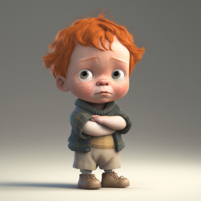

 Once upon a time, in a land far, far away, there was a boy named berry. Berry was a special baby boy, not only because he was the youngest in his clan, but also because he was the first baby boy to be born as a Non-Fungible Token (NFT). The villagers were amazed by Berry's NFT abilities and soon, he became a sensation in the digital world. People from all over the land started buying and trading Berry's NFTs, making him the most valuable baby in the land. But berry wasn't just a valuable asset to the digital world, he was also a fierce protector of his baby clan. Whenever there was danger, berry would use his NFT powers to summon an army of digital babies to defend his clan. As berry grew older, he realized that his cool NFT powers could be used for good. He started creating NFTs for other people in the land and helped raise money for charity. Berry's kindness and bravery made him a legend in the land, and his NFTs became the most sought-after collectibles. And so, berry lived happily ever after, using his NFT powers for good and protecting his baby clan from harm.